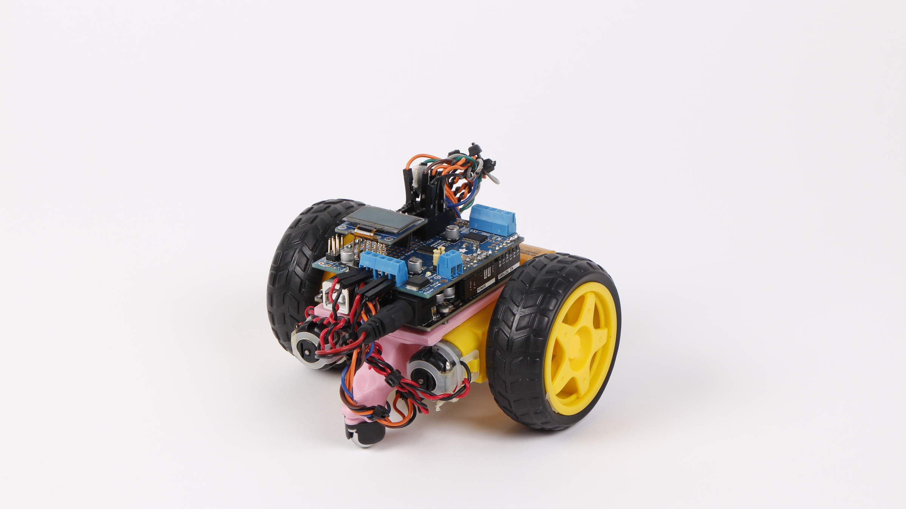
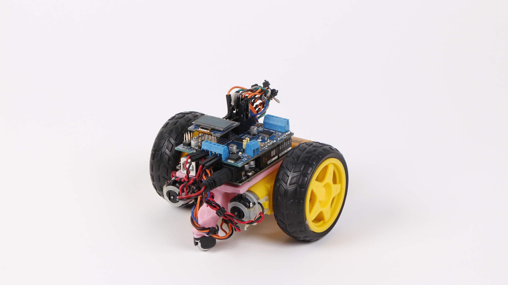

Code Cruiser
Educational Project DesignProject Overview
In today's digital era, it is crucial to equip children with essential coding and logic skills. Often that means many kids find their way onto tablets and computers at a very young age. Most of the time, they don’t learn and gain logic and problem-solving skills; instead, they end up wasting hours on a screen. Jumping into code digitally as a first step, is often too large and too overwhelming for many young minds. As mentioned, this often leads to more exploration of the tablet rather than the code itself. This is supported by Piaget's theory of development: direct manipulation of an object supports the development of thought particularly for young children. The project Code Cruiser is an educational toy designed to teach children valuable coding and logic skills, with a completely screens-off approach.
My Contributions
I was responsible for the physical design, fabrication, and programming of a robotic car. The car was equipped with a variety of sensors allowing it to be programed by color sequences painted upon "track" pieces. The user was able to use a variety of unique track pieces, each functioning as a code block, similar to scratch. Once a track was designed, the Code Cruiser would drive along the track, uploading the program, and execute the program on a gameboard.

Conceptual Development
The idea behind the Code Cruiser concept drew inspiration from both Scratch and the board game Robot Turtles. My goal was to merge Scratch's program organization and composition with the tangible, screen-free experience and gameplay elements found in Robot Turtles. To create programs, I employed a variety of track pieces, some of which are visible on the left. Following that, I designed and refined the car model through a series of prototypes, ultimately producing the final Code Cruiser prototype. You can view a 3D render and the ultimate image of the Code Cruiser below.
:rotate(0)/5poq51yiaou0gdqq4uxx67exqvxi) 
